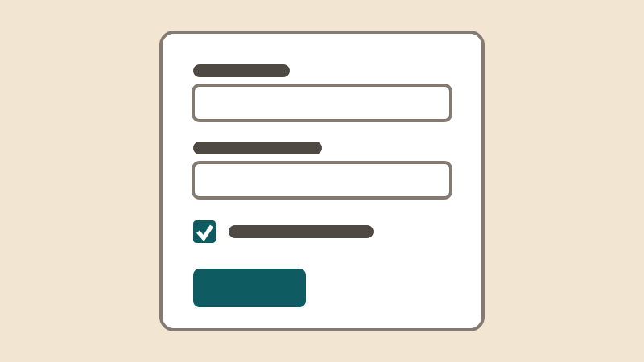
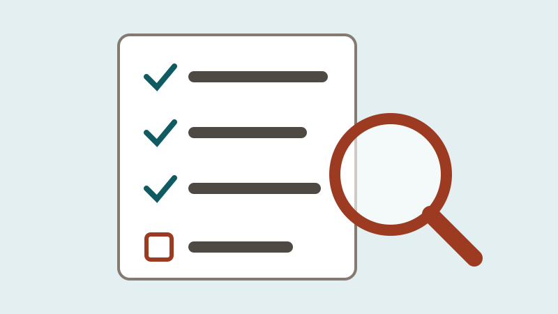
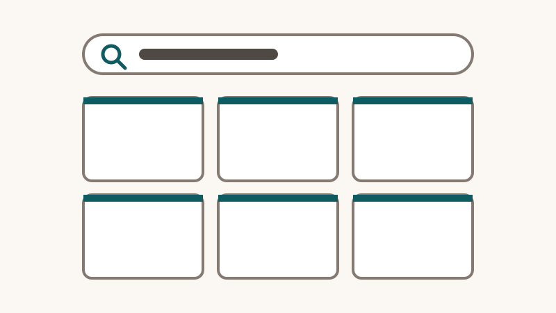

Hello, I’m Ana. I build websites that everyone can use.
I am a junior web developer. I make accessible, responsive websites for community organisations, and I test them with a keyboard, a screen reader, and real phones.
About me
I started learning web development at XR Camp, a free school for web, 3D, and XR development. Before that I organised volunteers for a neighbourhood group, so I know how much a clear, simple website helps a small organisation, and how much a confusing one costs it.
I care most about the people who are usually forgotten: people using an old phone on a slow connection, people who use a screen reader, and people reading in their second language.
What I can do
- Write semantic HTML, with clear headings, landmarks, and forms.
- Build a design system in CSS, with tokens, flexbox, and grid.
- Make layouts that work from a 320-pixel phone to a wide screen.
- Audit a page for accessibility against WCAG 2.2, and fix what I find.
- Add interaction with JavaScript that still works for keyboard and screen-reader users.
- Publish a site with Git and GitHub Pages.
Projects
Four projects from my first months of learning. Each one says who it was for and what I did. The first has a full case study about how I made it.
-

Riverside Community Centre website
A five-section website for a community centre: opening hours, programmes, and how to visit, on any screen.
Built for: local families, many on phones.
-

An accessible sign-up form
A form for joining a programme, with visible labels, helpful errors, and a clear thank-you page.
Built for: adults joining a class for the first time.
-

Accessibility audit and repair
I tested an events page with a keyboard, a screen reader, zoom, and automated tools, reported every problem, and fixed them all.
Built for: the centre's team, who needed to know what to fix first.
-

Programme explorer
Search and filter the centre's programmes as you type, and save favourites that are still there the next day.
Built for: visitors looking for one activity among many.
Prefer to explore? See the same projects in a small 3D gallery.
How I built this site
This site is hand-written HTML and CSS, with one small script for the project filter. It has no framework and no tracking, and the home page is smaller than a single photo from a phone camera.
I aim for WCAG 2.2 level AA. I tested every page with the keyboard alone, with NVDA and VoiceOver, at 200% zoom, at 320 pixels wide, and on two phones. If something does not work for you, please tell me, and I will fix it.
Contact
I am looking for a first role or freelance work building websites for small organisations. The best way to reach me is by email:
I usually reply within three working days, in English or Spanish.